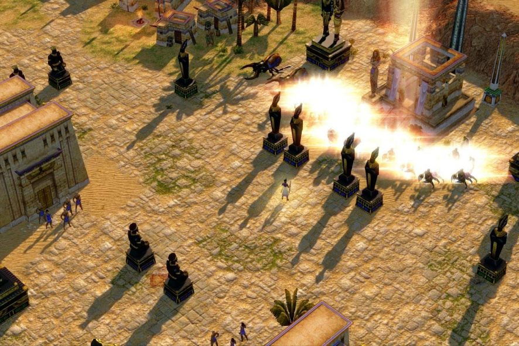
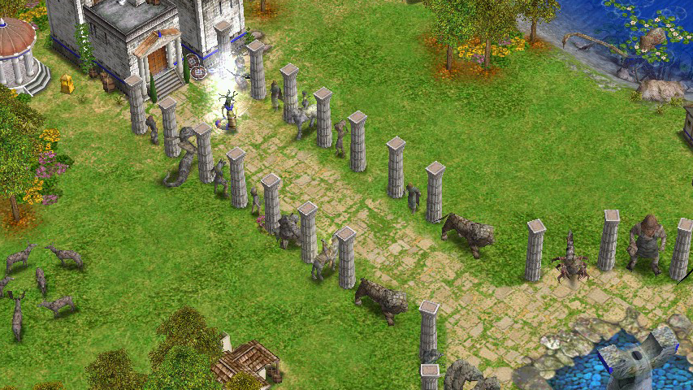

Игра
Эта стратегия, от компании Microsoft Game Studios® и движка BANG! Engine, представляет собой развитие линейки игр «Эпоха империй» и наследуют всё самое лучшее из признанного почётного члена жанра.
Если вы мечтали управлять армией бесстрашных викингов – эта игра для Вас.
Судя из названия, игроку предстоит окунуться в мир мифов и легенд нескольких известных народов:
- Греки
- Египтяне
- Скандинавы
Особенность игрового процесса заключается в возможности выбирать своего верховного бога,
который предоставляет уникальные способности своим подопечным. Этих богов в скандинавской расе три: Один, Тор и Локи. С первого взгляда это непозволительно мало,
но на самом деле пантеон богов представлен здесь намного шире. На этапах экономического развития, игрок выберет ещё несколько богов, каждый из которых подарит новые
виды юнитов и новые виды магии.
Широкий выбор уникальных возможностей, предоставляемый этой особенностью игры, делает процесс захватывающим.
Даже если Ваши противники тоже викинги – вероятность совпадения технологий и приёмов минимальна. Вы можете сделать ставку на гигантов и валькирий или на эйнхериев и огненных вепрей и т.д.
Вы можете воспользоваться магией заморозки противника, огненного удара или превращения окружающих деревьев в могучих защитников.
Найдите на карте несколько артефактов и наградите ваших воинов новыми возможностями или прочной бронёй.
Трёхмерная реализация мира позволила сделать игру красочной, движения юнитов очень плавными, а спецэффекты разнообразными и неповторимыми.
Игровые карты представляют собой разнообразные миры: от Афльхейма до Винланда.
Юниты
| Пехота | Отлично подходит для уничтожения конницы |
|---|---|
| Конница | Лучники для кавалерии лёгкая добыча |
| Лучники | Стрелы этих юнитов разят пехоту на повал |
| Мифические существа | У каждого свои приемущества |
Всех военных юнитов можно подразделить на семь категорий: пехота, кавалерия, лучники — их можно классифицировать как человеческие юниты, осадные орудия, флот, героев и мифические существа.
Они взаимодействуют по принципу «камень, ножницы, бумага»: пехота слаба перед лучниками, кавалерия — перед пехотой, а лучники — перед кавалерией, но при этом существует и противопехотная пехота, и кавалерия, эффективная против кавалерии, но нет кавалерии, хорошо сражающейся против пехоты. Такие же правила распространяются и на суда. Осадные орудия предназначены для разрушения зданий, но уязвимы перед особым типом кавалерии. Герои используются против мифических существ, назначение которых может быть различно, но в общем случае большинство из них используются против обычных человеческих юнитов, реже для разрушения сооружений. Также герои способны собирать реликвии, которые дают игроку бонусы, будучи помещены в храм.
Фараон призывает царя Скорпионов.
Появление Горгоны Медузы.
- Выводы
-
Обладая удачным набором черт, эта игра представляется практически бесконечный интерес для любителя экономических и военных стратегий.
Казалось бы, наличие трёх рас должно испортить и сделать игру за каждую из них стандартной. Но разработчики не пожалели сил подарить каждому народу свои уникальные здания, юниты, богов и магию. Разнообразие, графика, баланс и сюжет заставляют очень рекомендовать игру все любителям не только древней скандинавии, но и просто ценителям качественных игр. - Выводы
-
Обладая удачным набором черт, эта игра представляется практически бесконечный интерес для любителя экономических и военных стратегий.
Казалось бы, наличие трёх рас должно испортить и сделать игру за каждую из них стандартной. Но разработчики не пожалели сил подарить каждому народу свои уникальные здания, юниты, богов и магию. Разнообразие, графика, баланс и сюжет заставляют очень рекомендовать игру все любителям не только древней скандинавии, но и просто ценителям качественных игр. - Выводы
-
Обладая удачным набором черт, эта игра представляется практически бесконечный интерес для любителя экономических и военных стратегий.
Казалось бы, наличие трёх рас должно испортить и сделать игру за каждую из них стандартной. Но разработчики не пожалели сил подарить каждому народу свои уникальные здания, юниты, богов и магию. Разнообразие, графика, баланс и сюжет заставляют очень рекомендовать игру все любителям не только древней скандинавии, но и просто ценителям качественных игр.